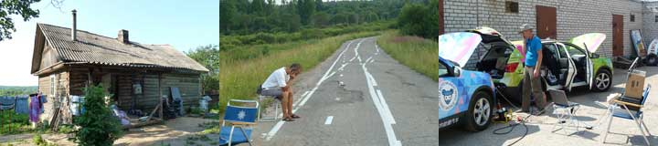
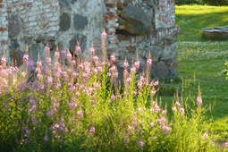
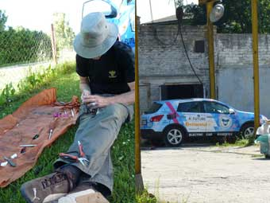
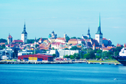

Der havde været meget svag strømstyrke i det lille bondehus, og generatoren som ladede på den ene bil var kørt tør ved midnatstid, hvor vi ikke orkede at stå op og fylde benzin på. Derfor kom vi af sted med meget lidt strøm på batterierne. I Porhov fandt vi et bilbærksted, hvor en flink chef gav os adgang til stikkontakterne. Det var så frygteligt varmt og måske var vi lidt slidte, for tilsyneladende ville den blå bil kun aflade? Hjalte mistænkte mig for at have gjort et eller andet? Sikringerne sprang hele tiden. Var der en kortslutning i vores kabeltromle? Vores russiske ven Dima som havde været med i den grønne bil siden Pskov gik i byen efter et russisk elstik som Hjalte monterede. Jeg brugte timer på at rulle ledninger ud og ind, rigge telefonforbindelse op og ned osv. osv . Elstikkene kom forkert på, så der opstod en lesbisk forbindelse med hunstik i begge ender. Heldigvis blev fejlen opdaget inden der kom en livsfarlig ledning med hanstik i begge ender.

Bilerne, havde næsten intet ladet i nattens løb. Så vi gav afkald på at se den gamle bydel ved floden, og kiggede i stedet efter et bilværksted.Det blev fundet, og Green lader, hvorimod Blue intet tager til sig. Er det laderen igen? Satellittelefonen er rigget op - hvad skulle vi dog have gjort uden den - og Søren forsøger at stille diagnosen via internettet. Timerne går, hvad skal det ende med? Heldigvis kommer vi alligevel ikke til at ende vores dage i Pskov. Da vi havde den blå ladet op til 20% kørte ud i det russiske bondeland, indtil vi stod midt i ingenting med en blå bil uden strøm. Bilerne står nu og lader med hver sin generator, og om lidt kører vi hen til en russisk familie der har inviteret os ned til deres hus. Solen synker og bremserne stikker, vi kommer til at sove godt inat

Tidligt op og ind i Rusland. Efter fem timer på grænsestationen ved ...........kom vi ud af Estland og ind i Rusland. Vores ven Dima ventede på os i Pskov. Men så skete det igen: Blue car var pludseliug uden strøm, og så stod vi der midt i byen uden strøm. En djævel hjemme i Danmark havde skruet på målesystemet, så det så ud som om der var strøm, på bilen, indtil lige pludselig....Nødgeneratorerne måtte sluttes til, så vi kunne trille hen til et billigt hotel- men der kunne bilerne ikke stå sikkert. De blev så flyttet til en bevogtet parkeringsplads, men der var for lidt strøm, så sikringerne slukkede for vagtmandens fjernsyn. Derfor ved vi ikke hvem som vandt verdensmesterskabet i Fodbold. Det var sent før vi opgav at trække mere svag strøm ud af stikkene i vagtmandens hus.

Den blå bil gik i stå på landevejen. Heldigvis lige i nærheden af et lille motel. Vi fik bilerne derhen, og arbejdede hele aftenen med at måle og ringe hjem på satellittelefonen. Søren vurderede at vi skulle skifte den ene batterilader. Timerne gik med at rigge ladeledninger op, nu til to biler. Nogle af stikkene måtte skiftes ud, vi skruede til vi var svimle.Til sidst havde Hjalte udskiftet batteriladeren og de to biler stod og summede imens de sugede strøm til sig. Klokken to om natten gik vi til ro i et solophedet værelse fyldt med de sultne myg.

De kørte af sted med mig, selv om jeg ikke var helt rask. Midt på dagen fik Hjalte og Nina, ved et stort byggemarked, to ladestik med stærkstrøm. Men jeg kunne ingen strøm spise. Dinose-computere var fremme, satellittelefonen blev sat til, der blev snakket og målt, hekset og bikset i sveddryppende varme. Efter tre timer kørte vi videre, stønt mit strømtryk var svagt. Pludselig kunne jeg ikke mere. Hjalte og Nina kan næsten heller ikke mere.
Den blå bil.

Ankom til Tallin i strålende sol og hedebølge. Søren havde igår, afsendt to reservedeleder som ville ankomme senere på dagen - En hovedsikring og en lader. Hos Nissans hovedforhandler blev vi modtaget med stor venlighed og interesse. De fik fat i pressen og TV, der måtte vente indtil vi var parate. PÅ Nissans værksted udførte Hjalte en lille men farlig operation, hvorunder han skiftede hovedsikringen under bilen. Imens underholdt jeg journalisterne , indtil vi med skjult udmattelse, demonstrerede de to smukke biler for estisk TV.
Nogle gode motorcykelvenner ringede og fortalte at de også var i Tallin, og de havde lavet middag til os! De boede i et pragtfuldt gammelt hus i den gamle bydel, og efter en herlig oksebøf med salat og et glas god rødvin, var vi kommet så meget til live igen at vi kunne kunne vandre ud i den historiske by og drikke chokolade.
Nina
Jeg, den blå bil, havde kørt lykkelige 25 km gennem Stockholm da jeg fik hjertestop. Dr. Hjalte var hurtig med diagnosecomputeren, og han konstaterede at der ingen liv var i batterierne.Der blev ringet til Dr.Søren inden jeg ved hjælp et tov blev jeg trukket hen til færgen. I færgekøen blev jeg på dramatisk vis genopllivet med nødgeneratoren i så jeg selv kunne trille ombord på færgen. Hjalte og Nina er helt udmattede.
Hilsen fra Den blå bil.
Nu skal vi indhente os selv og vores tidsplan. Derfor kørte den blå og den grønne bil kørt til Stockholm sammen med os og Brian på en nat. Vi har kørt på ialt 16 hjul. Undervejs holdt vi halvanden times sovepause, og vi er ankommet tidligt. Vi er kørt ned til en havnekaj, hvor Hjalte for første gang prøver satellittelefonen fra Thrane og Thrane. Uden problemer snakker vi med Kina! Senere skal vi fremvise bilerne foran foran Rådhuset, inden vi kl 17 kører ombord på færgen til Tallin. Nina
Nu skulle både den blå og den grønne bil være i orden. Men da færgebilletterne fra Stockholm til Turku i Finland er udsolgt, forandrer vi vores rute, så vi sejler fra Stockholm til Tallin i Estland. i stedet for. Jeg glæder mig så meget til at køre elbil igen at jeg, sådan rent forebyggende, er begyndt at lave øvelser imod tennisarm.
Nina
.Det kilder og snurrer når de justerer på mine batterier, så jeg bliver helt bims. Min store glæde er at jeg nu står sammen med min tvilling, DEN BLÅ BIL, der indtil nu har været generet af at det nye batteri-styresystem fra Reap ikke virkede. Den har knapt nok har turdet vise sig på gaden, men nu skulle det være i orden. Senere på ugen skal vi køres til Stockholm sammen med Nina og Hjalte
Den grønne bil.